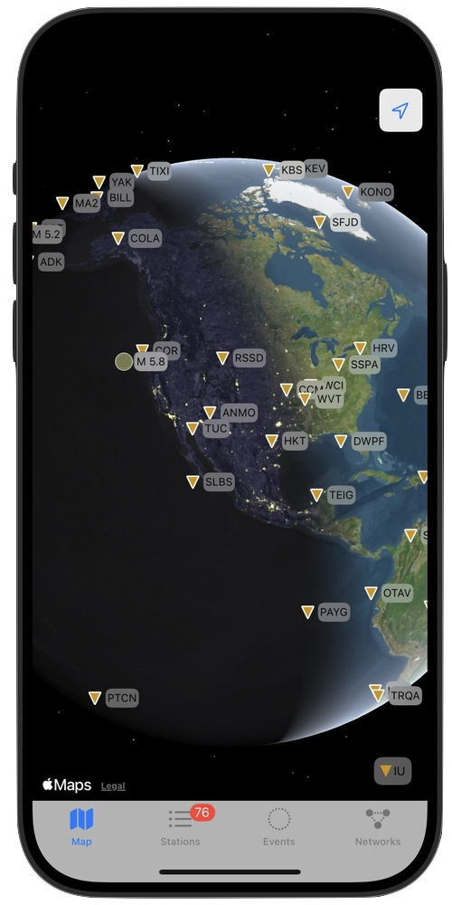
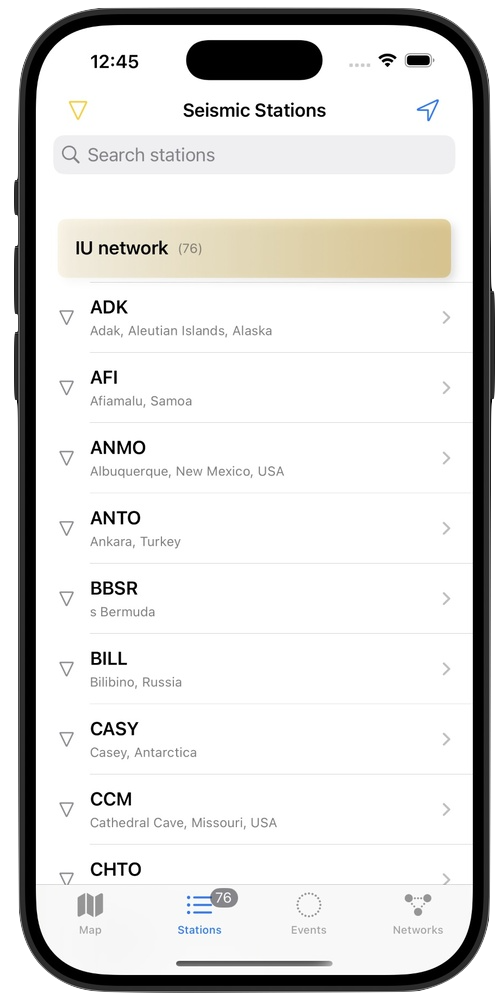
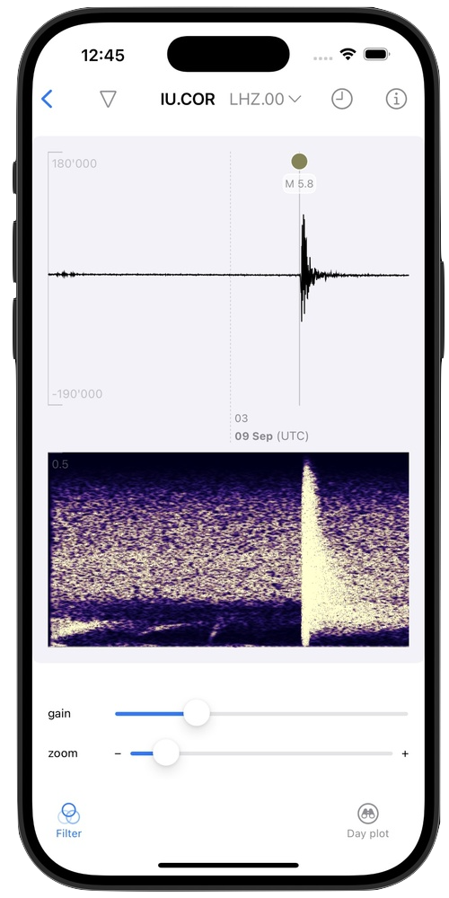
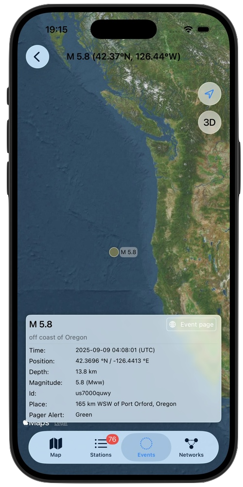
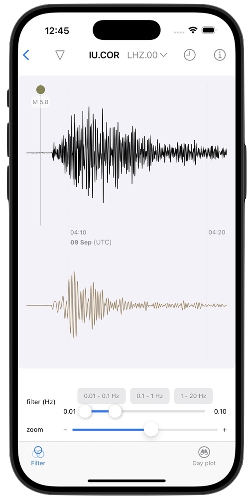
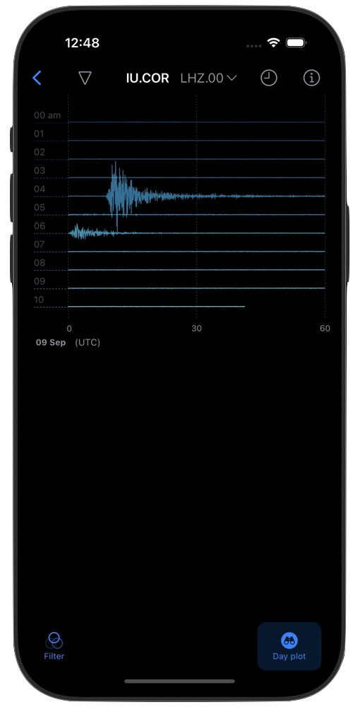

Available for free on the App Store.
Features
These features will make you a ground motion explorer!
Near-realtime Data

Access seismic data from global networks, updated every minute
Global Stations

Explore thousands of seismic stations worldwide with detailed metadata
Interactive Charts

Pinch, zoom (single-tap to select zoom window, double-tap to reset) and pan through high-resolution seismic waveforms
Earthquake Tracking

List current earthquake events with magnitude, depth and location data
Custom Analysis

Adjustable filters, spectrograms and analysis tools
Educational Tool

Learn seismology by exploring ground motion near you